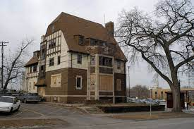

When we discovered the old Theta Chi fraternity house, it had been abandoned for over a year. We put in several offers over several years only to have them turned down in favor of another plan. Eventually the building was sold to a developer and prepared for demolition. We spent a year, wondering when they'd tear it down. Until, we received a letter from the Heritage Preservation Commission, stating the building was under historic consideration. We couldn't get insurance on our abandoned building. So we couldn't get financing. At the last moment a friend gave us 300K cash and we closed. During the 2002 Hockey Tourney, Rioters broke in chanting "Torch it! Torch it!". Members of Sigma Nu, neighbors next door, kicked them out with baseball bats. It took one year, a great contractor, and thousands of volunteers to bring Bordertown to life.

The Bordertown name comes from a desire to reach beyond ourselves and describes a place where people from different backgrounds live and work together as friends. The vision for Bordertown started when one of our founders, in his college days, heard about starving children and realized he needed to live for more than his own aspirations and entertainment. The photographs in our entry are from a home in the border-town Juarez, Mexico that serves children and families in one of the most violent cities in the world. Chon and Juanis who run the home are committed to loving and serving the Las Flores neighborhood of Juarez. The pictures are from an event for the home.